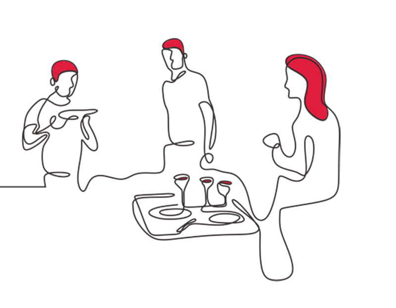
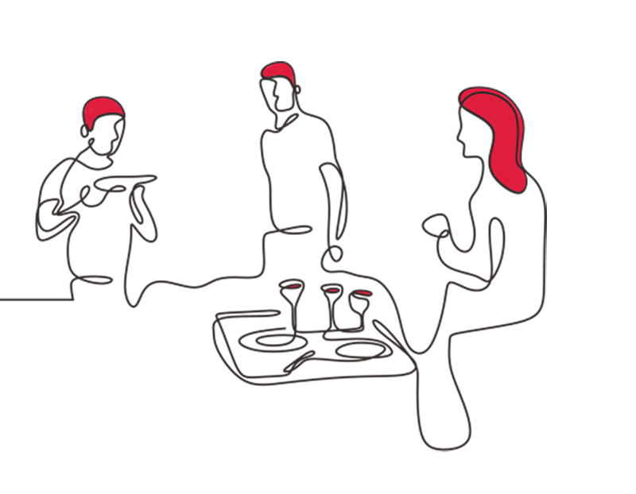

The Art of Storytelling
"Writing is painting a picture with words, where every sentence adds a stroke."
Dive into New Worlds
"Reading gives us someplace to go when we have to stay where we are." - Mason Cooley

Your Voice Matters
"A writer writes to make a home for self and others." - Natalie Goldberg
Knowledge is Power
"The more that you read, the more things you will know. The more that you learn, the more places you'll go." - Dr. Seuss

Unleash Your Creativity
"Every writer is a reader first. Every blog is a thought made real."

Connecting Ideas
"A blog is a conversation, not a lecture. It's about building a community." -Jane Smith
The Journey of a Blog
"Start writing, no matter what. The water does not flow until the faucet is turned on." - Louis L'Amour
The Art of Storytelling
"Writing is painting a picture with words, where every sentence adds a stroke." -Tom Holland
Dive into New Worlds
"Reading gives us someplace to go when we have to stay where we are." - Mason Cooley


 
